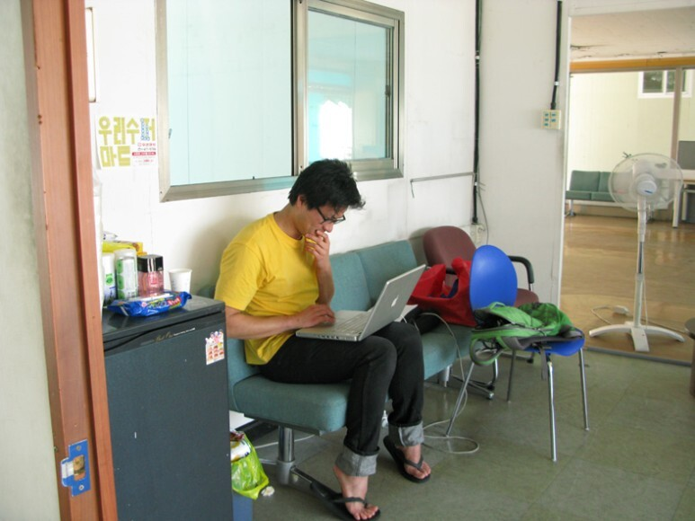
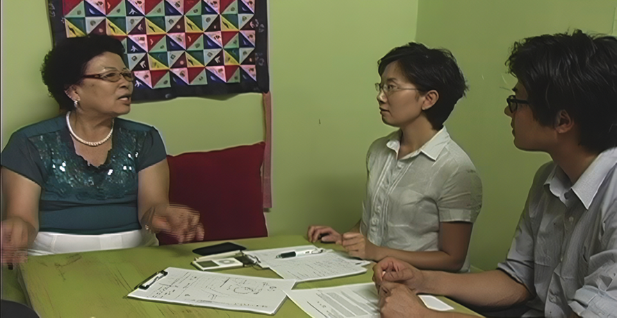
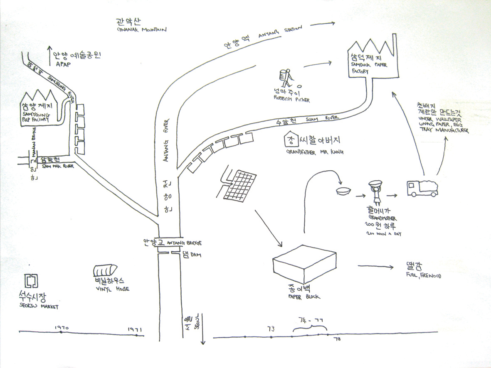
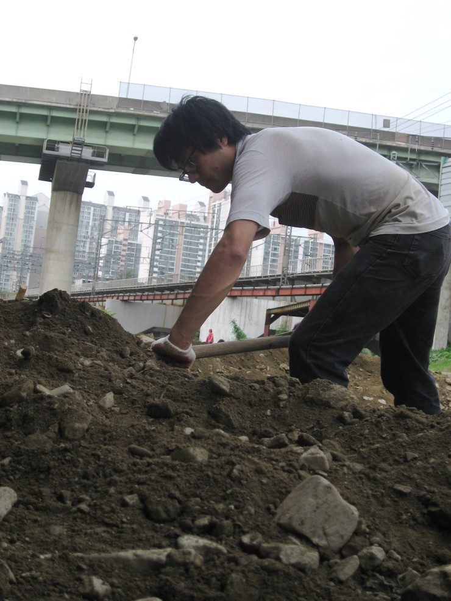
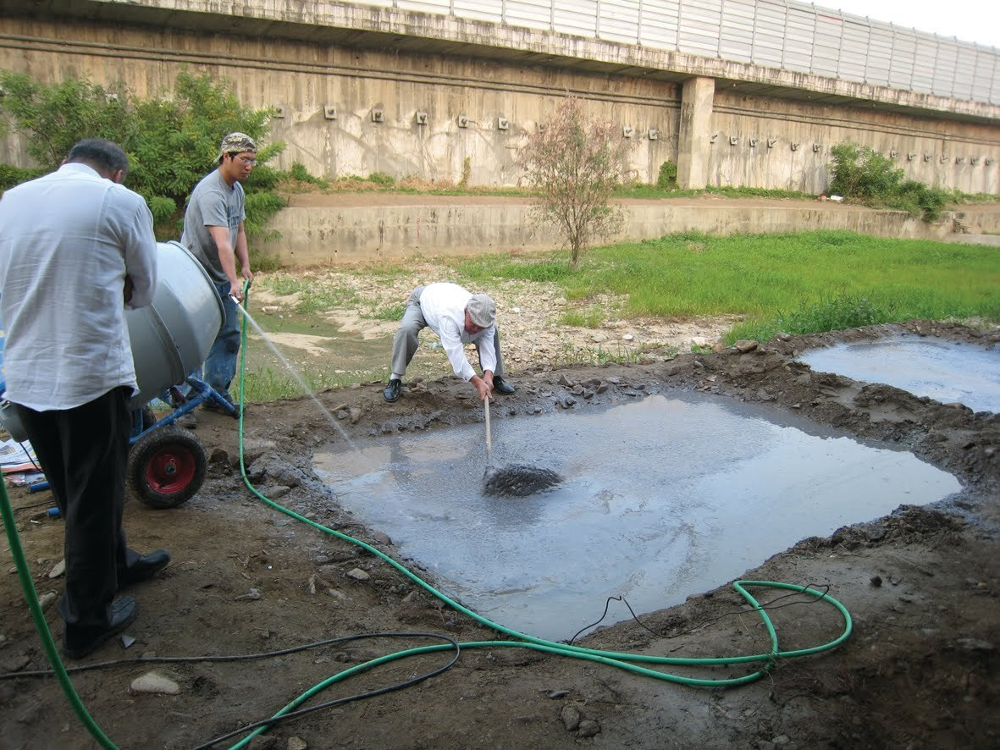
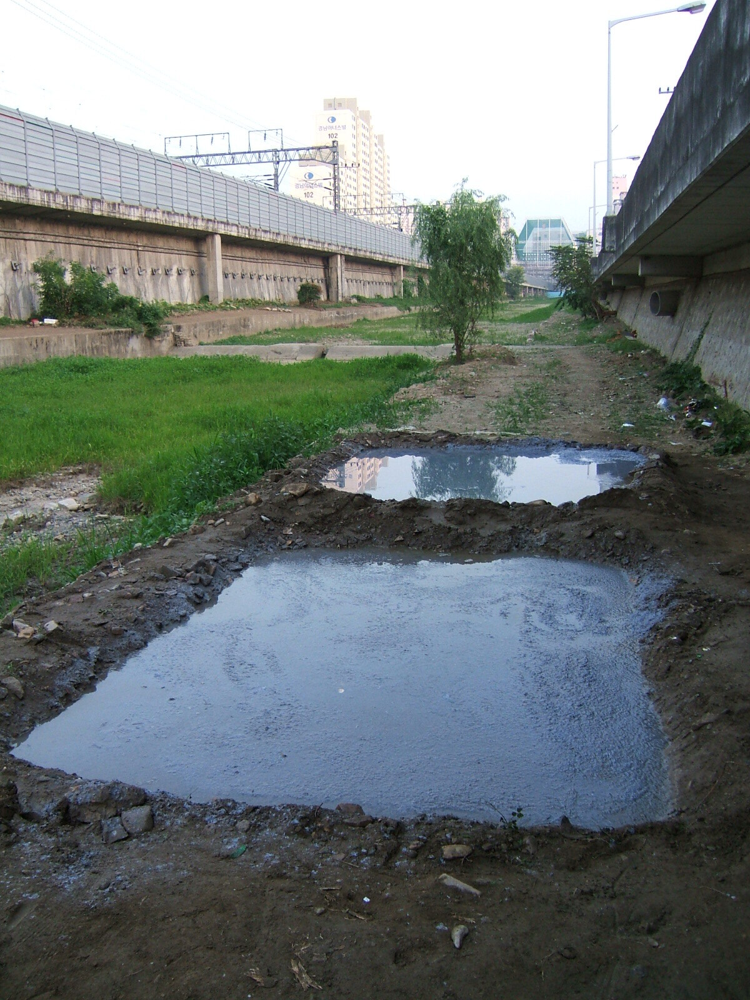
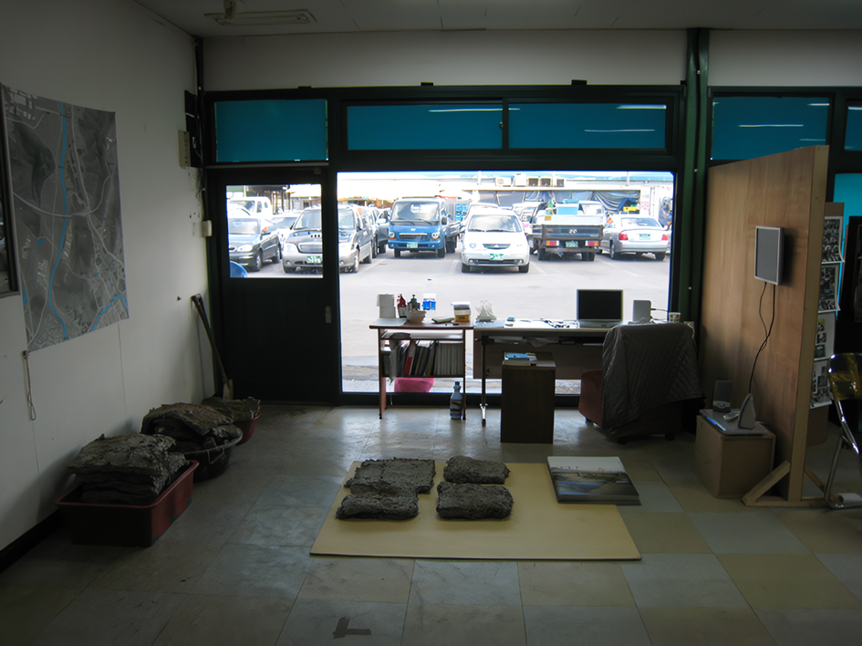
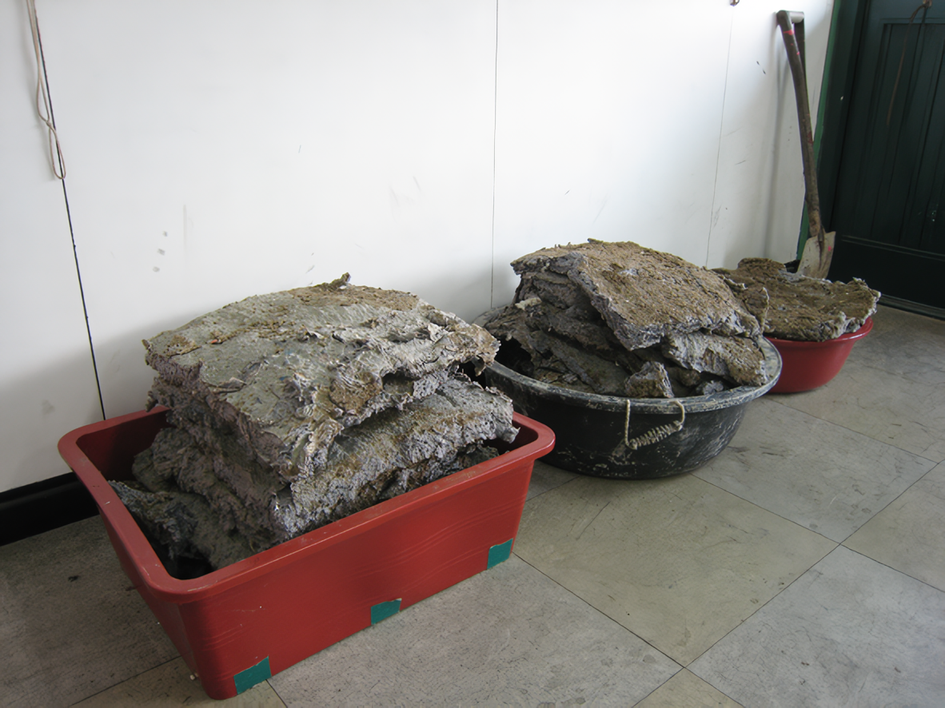
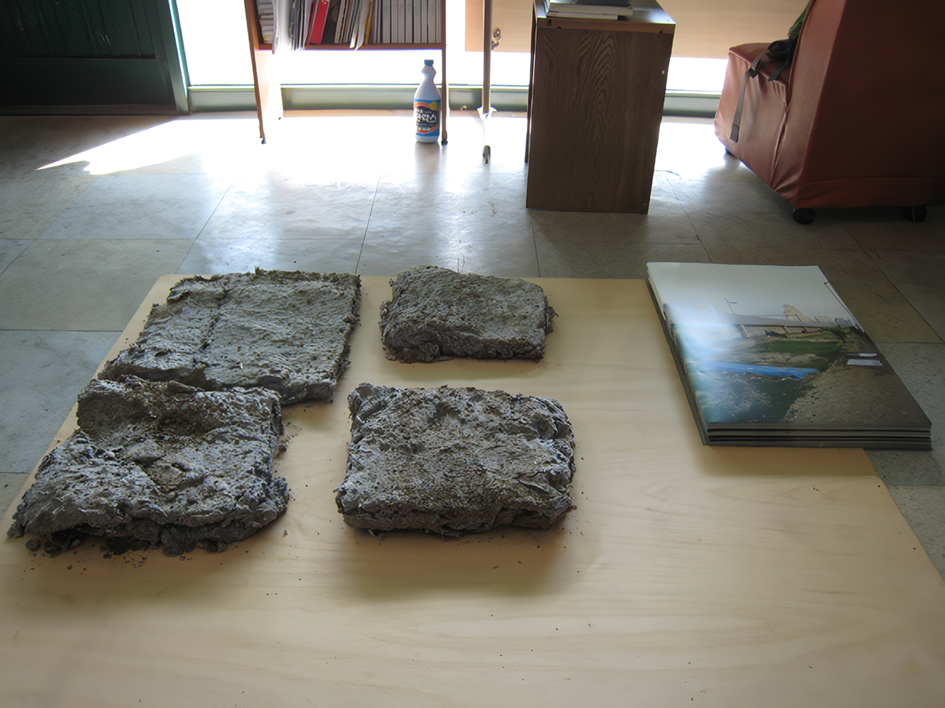

나는 현재 안양과 수암천에서의 종이 블럭 건조에 관한 구술을 바탕으로 한 작품을 준비하고 있다. 1973년에서 1977년 사이에 이 지역에 거주했던 몇몇의 주민이 참여한 이 작품은, 안양천이 한국의 근대 산업화에 기여한 복합적인 역할을 암시한다. 10월 17일부터 열리는 오픈 스튜디오를 통해, 그동안 해온 조사의 집적과 종이 블럭 건조를 재현한 건축물을 30년 전의 그 장소에서 시민들에게 공개함으로써 작품이 완성될 것이다. 10월 19일(일) 오후 5시에 있을 싸이트 방문과 워크샵은 안양의 종이 블럭 건조의 역사를 배우고자 하는 이들에게 좋은 기회가 될 것이다.

안양천의 역사적 중요성은 관찰만으로는 측정하기 어려운 것이다. 안양강의 현재 풍경은 풍부한 야생동물, 잘 보존되지 않은 풀로 덮인 둑, 그리고 근처의 주민들에게 다양한 휴양 용도를 제공하는 자전거/보행로가 있는 환경 복원의 성공적인 결과이다. 그것의 최근 역사에서, 안양천은 한국의 산업 현대화에 있어서 복합적인 역할을 했다. 현재의 목가적인 이미지를 유지하면서, 그 강은 한때 한국의 가장 더러운 하수로 별명이 지어졌고 그 강과 시내는 휴양용으로 바람직하지 않았다. 오늘날 우리가 보는 많은 새와 물고기들은 약 30년 동안 사라졌었다.
The historical significance of Anyang River is one that is hard to gauge with observation alone. Its current landscape is the result of successful environmental restoration with abundant wildlife, un-kept grassy banks and a cycle/pedestrian lane that provides a variety of recreational use for nearby residents. In its recent history, Anyang River played a complex role in Korea's industrial modernisation. In constant to the current idyllic image the river was once nicknamed Korea's dirtiest sewage the ecosystem was devastated and the stream and hanks undesirable for recreational use. Many birds and fish one sees today had been absent for around 30years.
나의 프로젝트는 수암과 삼성강변의 종이블럭 제작의 역사에 관한 것이다. 이 활동에 대한 기록이 명백하지 않기 때문에 대부분 구술 계정을 통해 그 역사에 대한 새로운 기록을 수집하고 창조하는 것이 프로젝트의 동기이다. 나의 프로젝트의 동기는 이 역사에 대한 기억이 살아있고 새로운 경험의 경로를 통해 논의될 수 있도록 하는 것이다. 나의 연구 방법은 외부인으로서 이 역사에 대한 직접적인 경험이 없고, 그리고 이러한 종이블럭을 처음으로 관찰한 김재의 현장을 방문한 사람들과의 대화와 인터뷰를 바탕으로 한다.

70년대 초 안양으로 이사 온 김재순 씨는 수암과 삼성강변의 종이블럭을 만든 여성 중 한 명으로, 당시 안양에 살지 않는 한 명을 제외하고는 모두 할머니였다며 두 번의 인터뷰에서 강 씨에 대한 기억을 다정하게 떠올렸지만 경제적 어려움에 대한 기억으로 눈물을 흘리며 프로젝트에 대한 중요한 통찰을 제시해줬다.
 
 
사업은 크게 네 부분으로 나뉘는데, 첫째는 장부를 수집하여 역사적 맥락을 조사하는 것, 둘째는 수암강변에서 종이 블럭을 만드는 과정을 복원하는 현장 특화 작업, 셋째는 김재순이 이끄는 작업장에서 종이 블럭을 만드는 경험에 대한 개인적인 설명을 제공하는 작업, 마지막으로 현장 특화된 작업에서 사진과 조각적인 결과가 도출된다.
  
연구방법과 주제를 결합한 연구방법은 필연적으로 복잡성을 초래하게 되는데, 구술역사는 기억에 의해 살아남게 되고 종이블럭 건조의 실천은 그 당시 그 지역에 살지 않았던 안양시민들이 생소하게 되는 매우 향토적인 것으로, 과거를 회상하는 과제로 사람들이 분투하면서 서로 상반된 이야기들이 생겨났으며, 필자의 프로젝트는 이를 지적하는 것을 목표로 하고 있지만, 내가 도달한 이해는 여러 가지로 기억되고 있는 것 같다.
안양천 수질오염 정도를 책임지고 있는 공장들 중, 삼덕제지는 2004년 안양시민들에게 보상의 표시로 자신의 공장용지를 시에 기증했다.